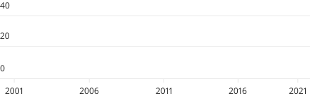

<section class="experts">
  <div class="experts__item">
    <div class="experts__title">
      <div class="experts__info">
        
        <div class="experts__data">
          <h2>{{ Name }}</h2>
          <h1>{{ data?.expert_facets?.institutions[0] ? data?.expert_facets?.institutions[0] : 'Unknown' }} <span class="activity__dot">•</span> {{ data?.expert_facets?.locations[0] ? data?.expert_facets?.locations[0] : 'Unknown' }}</h1>
          <ul class="experts__list">            
            <li>
              <span class="material-symbols-outlined">description</span>
              <span class="font-600">{{NumPapers}} relevant publications</span>
            </li>
            <li>
              <span class="material-symbols-outlined">description</span>
              {{data?.expert_facets?.number_of_publications}} publications
            </li>
            <li>
              <span class="material-symbols-outlined">mic</span>
              {{NumPresentations}} presentations
            </li>
            <li>
              <span class="material-symbols-outlined">groups</span>
              {{data?.expert_facets?.network_size}} network size
            </li>
          </ul>
        </div>
      </div>

      <button><span class="material-symbols-outlined">folder_special</span></button>
    </div>

    <div class="experts__box">
      <div class="experts__pub">
        <p>Recent publications:</p>
          <div class="s-info-containter" *ngFor="let recent of data.expert_recent">
              <div class="s-info-sm .mat-body-strong">
                  <!--  -->
                  <span class="s-text-ellipsis"> <a href={{recent.website_link}} target="_blank" [innerHtml]="recent.title | highlighter: _appService.input:'full'"></a> </span>
              </div>
          </div>
      </div>

      <div class="experts__chart">
        <div *ngIf="expertActiveTab==='Publications'">  
            <div *ngIf="data.expert_facets?.publications_by_years?.length!==0">         
            <p><span></span> Number of publications by year</p>
            <div class="experts__image" *ngIf="data.expert_facets?.publications_by_years" [style]="loadData(data.expert_facets?.publications_by_years)">
              <!-- 
              <div class="container vertical flat" *ngIf="data.expert_facets?.publications_by_years?.length > 0">
                  <div class="progress-bar" *ngFor="let arr of yearsArray">
                      <div [style]="barTop(arr)" class="progress-fill"></div>
                  </div>
              </div> -->
              <canvas height="140" width="500" id={{Name}} baseChart
              [datasets]="testingSubject$.value"
              [labels]="chartLabels"
              [colors]="chartColors$.value"
              [options]="chartOption$.value"
              [legend]="barChartLegend"
              chartType="bar"
              ></canvas>
            </div>
          </div>
          <div *ngIf="data.expert_facets?.publications_by_years?.length===0"><p class="noItem">No publications found in expert's publications.</p></div>
        </div>          
        <div *ngIf="expertActiveTab==='Vendors'" class="vendor__tab">
          <p *ngIf="data.expert_facets?.vendors?.length!==0">Vendor mentions:</p>
          <div *ngIf="data.expert_facets?.vendors?.length!==0" class="vendor__block">
            <div [matTooltip]="tile.name" class="vendor__text" [style.width]="calculateWidth(data.expert_facets?.vendors, tile.count)" [style.background]="tile.name === 'Alcon' ? '#003595' : background(data.expert_facets?.vendors, tile.count)" *ngFor="let tile of data.expert_facets?.vendors">
              <p [style.font-size]="tile.name === 'Alcon' ? '14px': '12px'" [style.font-weight]="tile.name === 'Alcon' ? '700': '400'">{{tile.name}}</p>
              <p>{{percentageValue(data.expert_facets?.vendors, tile.count)}}%</p>
            </div>
          </div>
          <div *ngIf="data.expert_facets?.vendors?.length===0"><p class="noItem">No vendors found in expert's publications.</p></div>
        </div>

        <div *ngIf="expertActiveTab==='Network'" [ngClass]="data.expert_facets?.co_authors?.length!==0?'network__tab':''">
            <div *ngIf="data.expert_facets?.co_authors?.length!==0" class="network__heading">
              <p>Co-authors:</p>
              <mat-paginator #paginator [length]="data.expert_facets?.co_authors?.length"
                (page)="pageEvent = $event; onPaginateChange($event)" 
                hidePageSize="true"
                [pageSize]="10">
              </mat-paginator>
            </div>
            <div class="coAuthors" *ngIf="data.expert_facets?.co_authors?.length!==0">
              <div class="coAuthors__item" *ngFor="let coAuthor of pageSlice">
                <span class="material-symbols-outlined">person</span>
                <p>{{coAuthor.name}}</p>
              </div>
            </div>
          <div *ngIf="data.expert_facets?.co_authors?.length===0"><p class="noItem">No networks found in expert's publications.</p></div>
        </div>

        <ul class="experts__tabs">
          <li (click)="epertTabs('Publications')" [ngClass]="expertActiveTab==='Publications'?'active':''"><button>Publications</button></li>
          <li (click)="epertTabs('Vendors')" [ngClass]="expertActiveTab==='Vendors'?'active':''"><button>Vendors</button></li>
          <li (click)="epertTabs('Network')" [ngClass]="expertActiveTab==='Network'?'active':''"><button>Network</button></li>
        </ul>
      </div>
    </div>
  </div>
</section>    

<!-- <mat-grid-list cols="2" rowHeight="9:5.5">
  <mat-grid-tile>
      <mat-card class="s-kol-card" layout-align="center left">
          <mat-card-header>
              <mat-card-title>{{ Name }}</mat-card-title>
              <mat-card-subtitle layout-align="left centered">
                  <div class="s-info-containter">
                      <div class="s-info-sm">
                          <span class="s-info-sm"> {{data?.expert_facets?.number_of_publications}} Publications </span>
                          <span class="s-info-sm s-pull-left-sm"> {{NumPresentations}} Presentations </span>
                      </div>
                      <div class="s-info-sm">
                          <span class="s-info-sm">{{ NumPapers }} Relevant Publications </span>
                          <span class="s-info-sm s-pull-left-sm"> {{data?.expert_facets?.network_size}} Network Size</span>
                      </div>
                  </div>
              </mat-card-subtitle>
          </mat-card-header>
          <mat-card-content>
              <div class="mat-h5"><b>RECENT ACTIVITIES </b></div>
              <div class="s-info-containter" *ngFor="let recent of data.expert_recent">
                  <div class="s-info-sm .mat-body-strong">
                      
                      <span class="s-text-ellipsis"> <a href={{recent.website_link}} target="_blank">{{ recent.title }}</a> </span>
                  </div>
              </div>
          </mat-card-content>
      </mat-card>
  </mat-grid-tile>

  <mat-grid-tile>
      <mat-card class="s-kol-chart-tabs" layout-align="left center">
          <mat-card-content>
              <mat-tab-group dynamicHeight mat-align-tabs="center" class="s-tab-group" [selectedIndex]="tabValue">
                  <mat-tab>
                      <ng-template mat-tab-label>
                          Work by year
                      </ng-template>
                      <canvasjs-chart [options]="chartOptions" [styles]="{width: '100%', height:'200px'}"></canvasjs-chart>
                      <iframe [src]="PubFigure"> </iframe>
                  </mat-tab>
                  <mat-tab>
                      <ng-template mat-tab-label>
                          Vendor alignment
                      </ng-template>
                      <iframe [src]="OrgFigure"> </iframe>
                  </mat-tab>
                  <mat-tab>
                      <ng-template mat-tab-label>
                          Network chart
                      </ng-template>
                      <iframe [src]="NworkFigure"> </iframe>
                  </mat-tab>
              </mat-tab-group>
          </mat-card-content>
      </mat-card>
  </mat-grid-tile>

</mat-grid-list> -->
